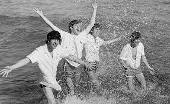
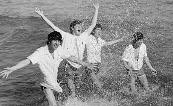

Biografia do grupo
The Beatles foi uma banda britânica, de rock, formada em Liverpool, cidade do noroeste da Inglaterra, que ficou famosa em todo o mundo e influenciou toda uma geração, movimento que a imprensa britânica chamou de Beatlemania. The Beatles foi formada em 1960, por 4 integrantes, John Lennon, Ringo Starr, Paul McCartney e George Harrison. A banda criada em 1957, inicialmente foi formada por John Lennon e seus colegas de escola, Peter Sholton, Erick Griffths, Bill Smith e Rod Davis. Em homenagem a escola Quarry Bank School, a banda recebeu o nome de The Quarrymen. Ainda em 1957, Paul McCartney foi convidado a integrar a banda. Em 1958, foi a vez de George juntar-se ao grupo. Em 1960 a banda muda o nome para "The Beatles". Nesta época a banda não tinha baterista fixo. Em 1961, The Beatles realiza sua primeira apresentação no The Cavem Club, onde permaneceu tocando até 1963. Em 1962, assinaram contrato com o empresário Briam Epstein, que mudou o visual da banda, trocando as roupas de couro por trajes formais. Ainda este ano, Ringo Starr é convidado para baterista da banda. Em agosto a banda fez sua primeira apresentação com a formação definitiva, George, Paul, John e Ringo. Em outubro de 1962, com a gravação de "Love Me Do", a banda participou do programa People and Places, transmitido ao vivo na TV Granada. No início de 1963 a banda estava em todas as paradas britânicas. Em 1964 a banda fez sua primeira apresentação em Nova Iorque, assistidos por uma multidão, a beatlemania se espalhava por vários países. Em 1965 a rainha Elizabeth II da Inglaterra, condecorou os Beatles com a Ordem do Império Britânico. Em 1965 a banda já lançava seu sexto álbum. Em 1966 a banda tira férias de três meses e, em março inicia uma turnê por cinco países, Alemanha, Filipinas, Japão, Estados Unidos e Canadá. Em 1967 o empresário morre e a banda entra em discórdia para escolher um novo empresário. Em 1969 o grupo grava seu penúltimo álbum "Abbey Road". Em setembro Lennon anunciou sua saída da banda. No dia 10 de abril de 1970, Paul anunciou para o público, o fim da Banda, uma semana antes do lançamento de seu primeiro álbum solo. O motivo do fim do grupo ainda é cercado de mistérios.
Foto do Beatles
 
